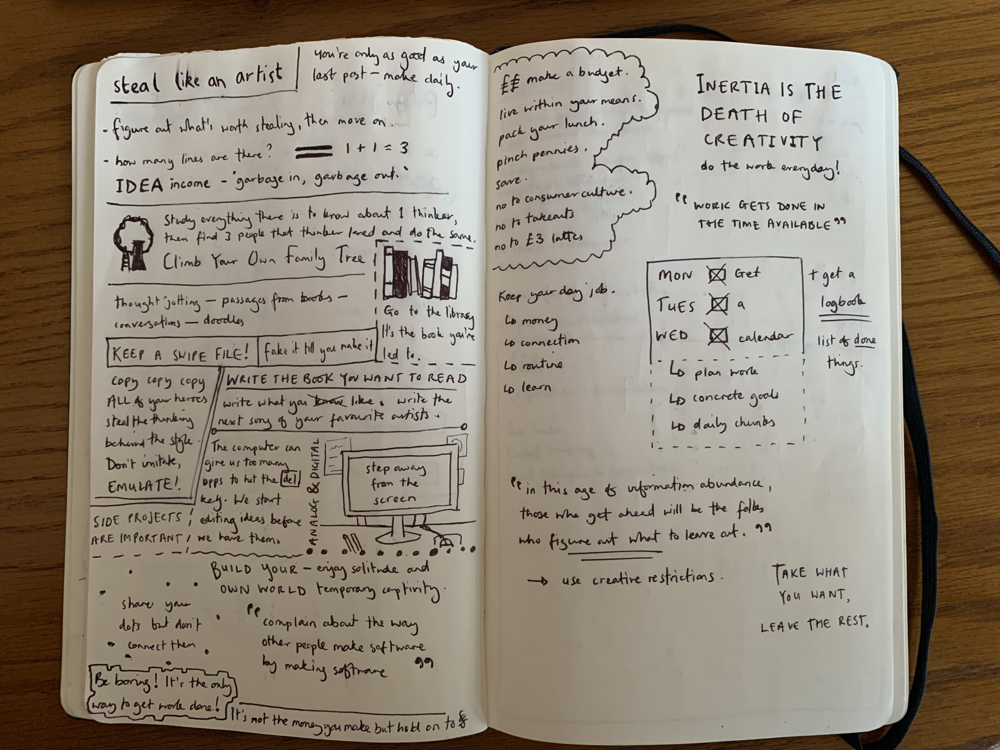
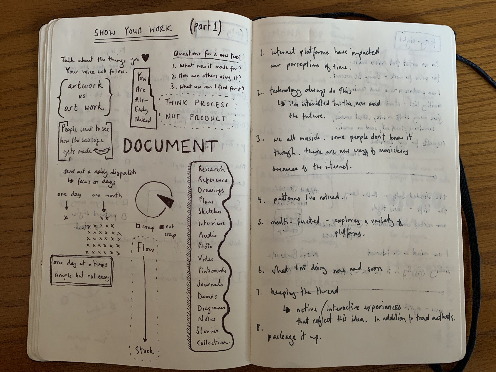
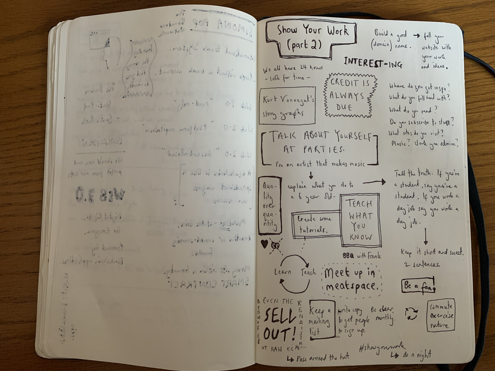
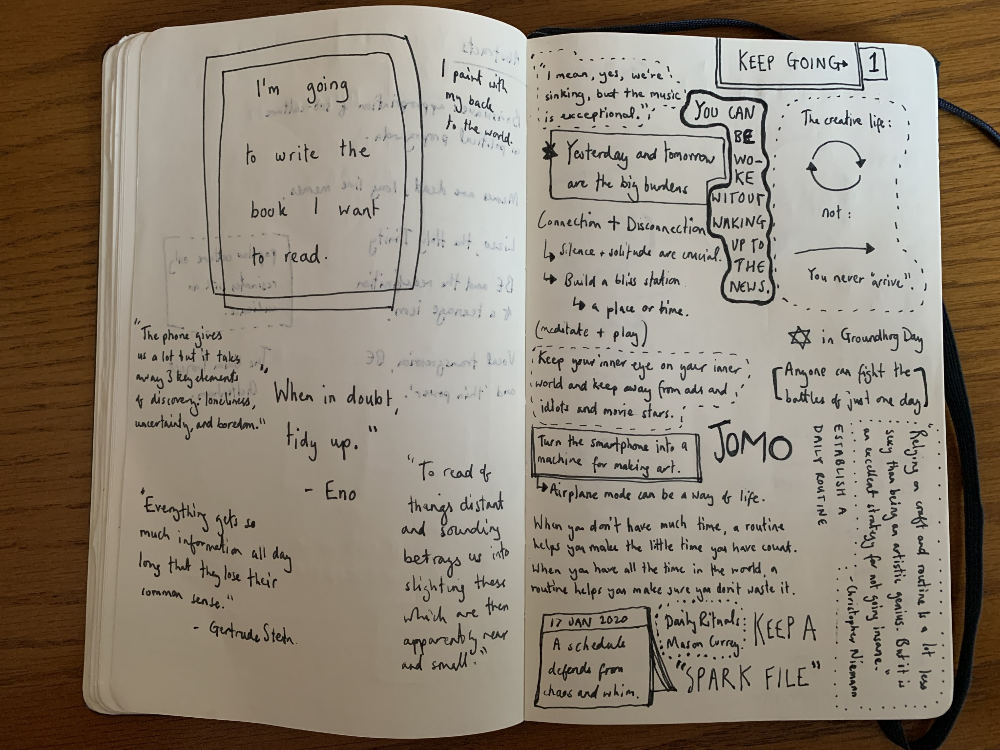
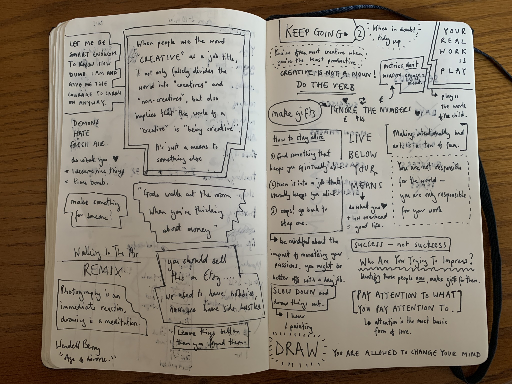

archive stuff, and keep track of things.
Back to Blog | Gary-Martin
Austin Kleon |
|---|
|
I was recently recommended a book by Austin Kleon called ‘Show Your Work' in a discussion about how to 'scale up' projects. The book looked really interesting so decided to buy it to have a deeper read. I noticed there were two other books in the same style by the same author so got those as well, cos, why not? I loved all three of them: “Shoe Your Work”, “Steal Like An Artist”, and “Keep Going”. They are aimed at artists, but it is made quite clear that the habits described in the books can be transferred to people from many types of backgrounds in all sorts of industries. Each book has a different focus, but all offer a series of tips on how to develop your creative practice, through anecdotes, examples, inspirational messages from other artists. There are many things in all three books that I have taken note of that I would benefit from applying in my own creative practice, daily routine, and outlook on my project. My notes while reading the three books:      |